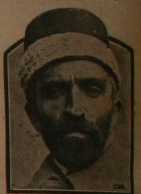

Salih Yeþil

Salih Yeþil’in nerede doðduðu kendisi ile ilgili kaynaklarda pek belirtilmemektedir. Doðum tarihi de kesin olarak bilinmemektedir. Ancak ilk Meclis’e Erzurum mebusu olarak katýldýðýndan hareketle doðum tarihi tahmin edilebilir. Birinci Büyük Millet Meclisi’ne girdiði zaman kýrk beþ yaþýnda olduðu belirtilmektedir (Necmeddin Þahiner, Son Þahitler, 1. C., s. 74). 1920 tarihinden kýrk beþ yýl geriye gidildiðinde 1875 tarihi karþýmýza çýkmakta ve bu tarihte doðmuþ olabileceði tahmin edilmektedir.Salih Yeþil, Yeþil Ýmamzade Mustafa Niyazi Efendinin oðludur. Ýlk eðitimi ve çocukluk yýllarý hakkýnda bilgi yoktur. Erzurum’da Maarif Müdürlüðü ile Numune Mektebi Müdürlüðü yaptýðý bilinmektedir. Birinci Dünya Savaþý öncesinde neler yaptýðý, hangi okul veya okullarý okuduðu da bilinmemektedir.
Salih Yeþil, Birinci Dünya Savaþý sýrasýnda, doðu cephesinde Ruslara karþý Bediüzzaman ile birlikte ayný cephede çarpýþtý. Ruslara esir düþünce Sibirya’ya götürüldüler. Daha sonra Bediüzzaman bir baþka kampa alýnýnca ayrý düþtüler. Uzun süre Sibirya ve Bakü’de esaret hayatý yaþayan Salih Yeþil, esaretten sonra kaçarak Ahlat’a geldi. Bu kaçýþ sýrasýnda büyük sýkýntýlar çekti. Kendisi bu meþakkatli yolculuk ve Bediüzzaman Hazretleri için þu ifadeleri kullanmaktadýr:
“Ben baþýmdan geçen bu hadiseyi Bediüzzaman’ýn büyük himmetine, yardýmýna ve kerâmetine baðlýyorum. Molla Said’in duâlarý hürmetine yeniden hayata kavuþmuþtum. Ben buna, ‘Ancak o zat olabilir’ diye inanýyorum. Hele yaðmur gibi þarapneller ve kurþunlarýn yaðdýðý bir sýrada, atýn üzerindeki o heybetini ve celâlini hiçbir zaman unutamam. Bu zat, yani Bediüzzaman Molla Said-i Meþhur, hem kumandan, hem de evliyaydý…” (Son Þahitler, 1. C. s. 79).
Ülkesine dönen Salih Yeþil, Büyük Millet Meclisi’nin açýlmasý üzerine Erzurum Mebusu olarak iþtirak etti. Mecliste yaptýðý heyecanlý konuþmalarla kendisinden söz ettirdi. Kürsüde sözünü sakýnmazken, bir ara yaptýðý sert konuþmadan dolayý on beþ gün oturumlara katýlmama cezasý aldý. Bilindiði gibi Birinci Meclis’te pek çok gizli oturum yapýlmakta ve bu oturumlarda her türlü konu görüþülmekteydi. Diðer taraftan halk da maddîmanevî her þeyleri ile Kurtuluþ Savaþý’ný vermekteydi. Ýþte bu sýralarda bazý milletvekillerinin fazla harcamalarda bulunmalarýndan ve milletin yaþadýðý sýkýntýlara raðmen duyarsýz kalmalarýndan þikâyetçi olup þöyle teklifte bulundu:
“Meclis Riyaseti tedbir alsýn, asker usûlü tek kap yemek yiyelim. Sanayi mektebindeki yatakhanelerimizi terk etmeyelim. Halk gibi yaþayalým, halk gibi yiyelim, halk gibi giyinelim. Bu hareketi de bir gösteriþ ve þekli kurtarmak için deðil, eðer refah ve huzura kavuþacaksak kanýný ve canýný istediðimiz, onu kurtarma yolunda olduðumuzu söylediðimiz halka lâyýk olmanýn vicdan rahatý içinde yapalým.” Bu teklif alkýþlarla karþýlandý ve çalýþma grubu oluþturuldu.
Meclisin dâveti üzerine Ýstanbul’dan Ankara’ya gelen Bediüzzaman ile birlikte sohbet ve müzakerelerde bulundu. Bediüzzaman’ýn Meclis tarafýndan alkýþlarla karþýlandýðýný hatýralarýnda nakletti. Bediüzzaman’ýn Meclis kürsüsünde okunan on maddelik konuþmasýný daha sonra bir lâyiha olarak hazýrlayýp baþýna bir takdim yazýsý koydu. Bu lâyihayý baþucuna astý. Takdim yazýsýnda;
“Þu lâyiha on üç sene evvel Meclis-i Milli, Yunan’ý maðlûp ettikten sonra o Mecliste Kara Kâzým, Nureddin paþalar gibi hamiyet-i Ýslâmiyeyi taþýyan çok mebuslarýn bulunduðu ve þimdiki bid’alarýn alâmeti göründüðü bir zamanda olduðundan, lâyihadaki Meclise karþý takdirkârane kelimeler þimdikilere hiç aidiyeti yoktur” demekteydi.
Salih Yeþil Bediüzzaman’a olan ilgisi ve alâkasýný devam ettirdi. Daha sonraki dönemde de karþýlýklý mektuplaþmalar oldu. Bir mektubunda, Bediüzzaman ile birlikte Darü’l-Hikmeti’l-Ýslamiye’de çalýþmýþ olan Mehmet Akif ve Mehmet Þevketi’den özel bilgiler aldýðýný, bu bilgileri yazmak zorunda olduðunu ve bunlarý kayda geçirmek için kýsa kýsa sorular yönelterek cevap vermesi ricasýnda bulundu. Mektubu alan Bediüzzaman “Aziz, sýddýk, âlicenap eski ve yeni kardeþ Yeþil Salih” diyerek baþladýðý “Ýnþaallah sizi hiç unutmayacaðým. Bu halimde bu alâkadarlýðýnýz benim çok aðýr sýkýntýlarýmý hafifleþtirdi Allah senden razý olsun, âmin” diyerek bitirdiði mukabil mektubu yazdý (age).
Bediüzzaman’a yapýlan haksýzlýk ve çektirilen sýkýntýlara kayýtsýz kalmayan Salih Yeþil, zamanýn Ýçiþleri Bakaný olan Hilmi Uran’a mektup yazdý. Yazmýþ olduðu eserlerinin yanlýþ bir þekilde anlamlandýrýlarak çembere alýndýðýný ve gençlik yýllarýnda Türk milletine büyük hizmetlerde bulunmasýna raðmen bu yaþlý haliyle büyük sýkýntýlara maruz býrakýldýðýný belirterek bir an evvel serbest býrakýlmasý ricasýnda bulundu. Mektubun devamýnda þu ifadelere de yer verdi:
“El’an Afyon’un Emirdaðý kazasýnda ikamete memur olan Molla Said, doðumundan itibaren Türk kardeþleri arasýnda yaþamýþ, Türk seciyesiyle perverde olmuþ, Umumî Harpte Kafkas’ýn karlý daðlarýnda kahraman askerlerimiz arasýnda Gönüllü Alay Kumandaný olarak mücahede ve irþad için dolaþýp büyük bir harp madalyasý almýþ, Sarýkamýþ taarruzunda, Bitlis’in sukutunda, yaralý olduðu halde, esir olup senelerce Rus garnizonlarýnda çile çekmiþ, firar edip Ýstanbul’a gelerek ilmî kudretine binaen Darü’l-Hikmeti’l-Ýslâmiye azalýðýnda bulunmuþ, Kuva-yý Milliye ihdasýnda halký mücahedeye teþvik etmiþ, Büyük Millet Meclisinin ilk senesinde Ankara’ya gelerek Hacý Bayram misafirhanesinde birçok mütereddit kimselere vatanýn müdafaasý lüzumunu anlatmak hizmetinde bulunmuþ olan bu hakikî vatanperver insanýn, evvelce ibadete, imana, itikada müteallik yazdýðý ve yaza gelmekte olduðu eserleri, din ve dindarlarý sevmeyen bazý kimselerin, hususuyla Dahiliye Vekâletinde bulunmuþ olan menfaatperest Þükrü Kaya’nýn mezhep ve rejimine uygun gelmemekle, asýlsýz isnad ve uydurma raporlarla bu zavallý adam yirmi küsûr seneden beri hapis ve nefiy cezalarýyla periþan edilmiþ ve iki sene evvelisi yine o yazýlarý bahanesiyle Kastamonu’daki çilehanesinden kollarýna kelepçe vurularak kendisine selâm vermiþ olan altmýþ altý adamla Denizli Cezaevine sevk ve on bir ay kadar hapsedildikten sonra, muzýr telâkki edilen o eserleri, evvelâ Ýstanbul Müftülüðünde bir heyet tarafýndan, bilâhare Ankara’da Diyanet Riyaseti ve Dil Tarih Enstitüsü azalarýndan mürekkep bir komisyon marifetiyle aylarca tetkik olunduktan sonra, bu eserlerin hiçbirisinde devletin siyasetini ve asayiþi rencide edebilecek en ufacýk bir þey görülmemekle, Molla Said ve Nur þakirtleri ve eserlerini okuyanlar, mahkeme kararýyla serbest býrakýlmýþ ve Denizli’de oturmasýna müsaade olunmuþ iken, maatteessüf, bu ihtiyar adam, az zaman sonra Denizli’den Afyon’a ve oradan da Emirdaðý kazasýna teb’îd ve herhangi bir Türk kardeþiyle dahi temastan men edilmiþ…” (Emirdað Lâhikasý, s. 135).